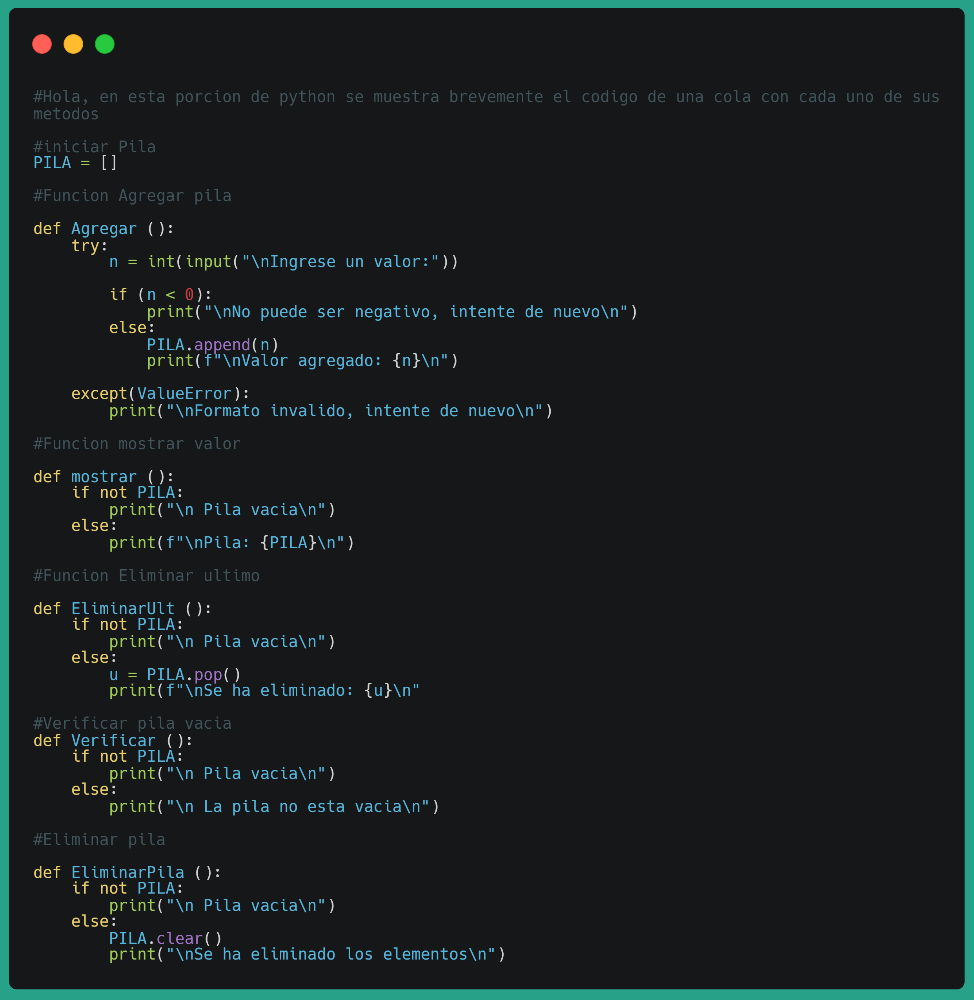
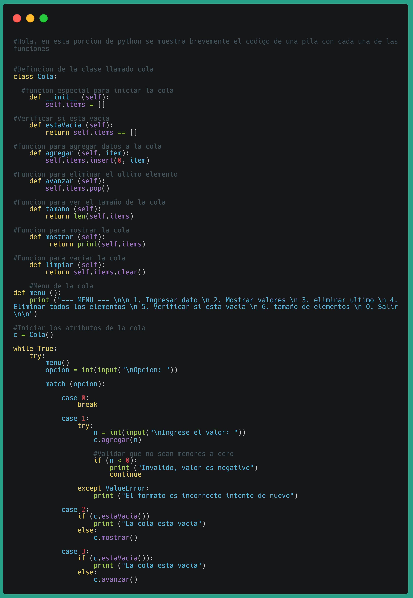
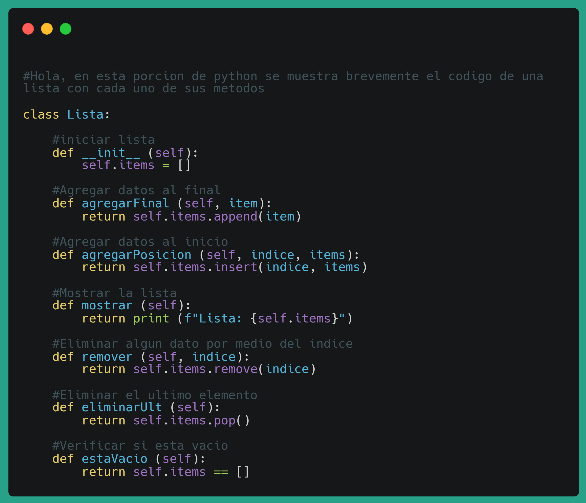
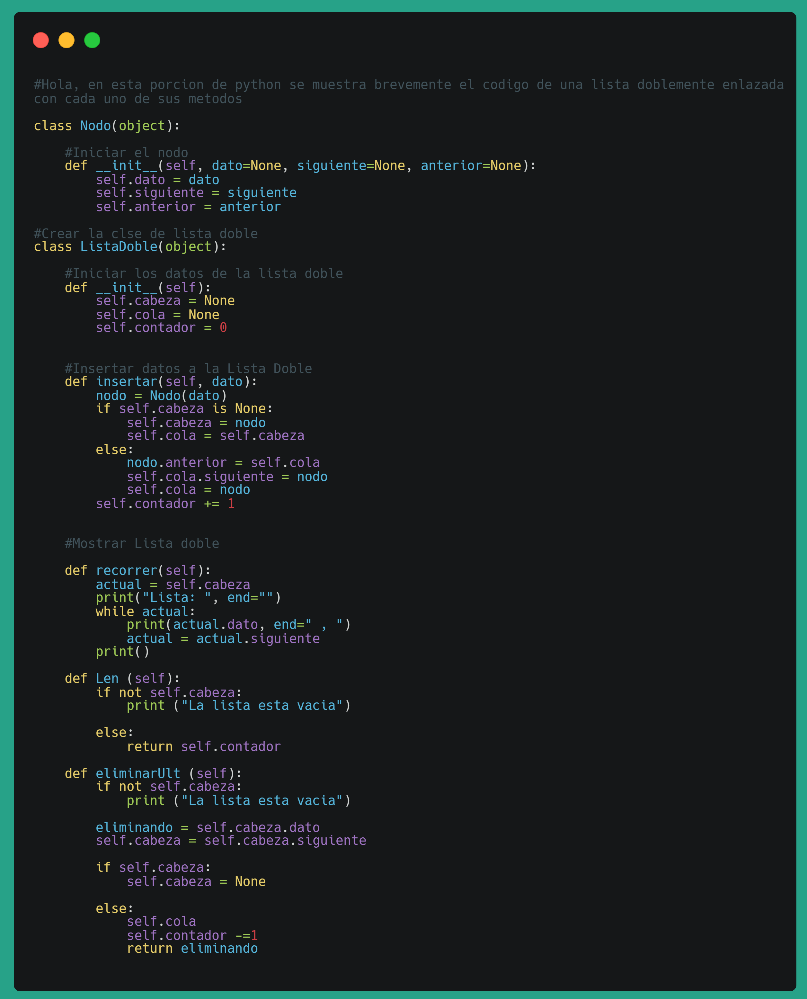

Estructura de datos
Las estructuras de datos son formas específicas de organizar y almacenar datos en una computadora para que puedan ser utilizados de manera eficiente. Tipos comunes incluyen arreglos, listas enlazadas, pilas, colas, árboles y grafos. Elegir la estructura correcta puede mejorar significativamente la eficiencia y claridad del código.
1.2 Ventajas y desventajas
Optimizacion de rendimiento
Las estructuras de datos eficientes permiten que los algoritmos se ejecuten más rápido. Por ejemplo, una búsqueda en una lista desordenada puede tomar tiempo lineal, mientras que una búsqueda en un árbol equilibrado puede realizarse en tiempo logarítmico.
-
Solución de problemas complejos:
Cada estructura de datos está diseñada para resolver problemas específicos de manera eficiente. Por ejemplo, las colas de prioridad son ideales para gestionar tareas en sistemas en tiempo real donde algunas tareas tienen más importancia que otras.
-
Claridad y legibilidad
Usar estructuras de datos adecuadas hace que el código sea más claro y fácil de entender, lo que facilita su mantenimiento y mejora. Por ejemplo, elegir una pila para gestionar operaciones deshacer y rehacer hace que la lógica del programa sea más clara.
Desventajas
Complejidad en la Implementación
Algunas estructuras de datos, como los árboles balanceados y los grafos, pueden ser complejas de implementar y mantener, lo que puede aumentar el tiempo y el esfuerzo de desarrollo.
-
Sobrecarga de Memoria
Algunas estructuras de datos, como las listas enlazadas, consumen más memoria debido al almacenamiento de punteros adicionales. Esto puede ser ineficiente si se trabaja con grandes cantidades de datos en sistemas con recursos limitados.
-
Rendimiento Específico del Contexto
No todas las estructuras de datos son adecuadas para todos los tipos de problemas. Por ejemplo, los arreglos pueden ser ineficientes para operaciones de inserción y eliminación frecuentes debido al costo de desplazamiento de elementos.
2. Pilas
2.1 Concepto de pilas
La pila es un tipo de estructura de datos que se basa en la idea de una pila de tarjetas o de plato. Se compone de una colección de nodos, donde cada nodo contiene un valor y un apuntador que apunta al nodo siguiente en la pila. La pila se construye mediante el uso de nodos, donde cada nodo se inserta en la estructura mediante el uso de los operadores push y pop.
La pila se utilizará comúnmente en aplicaciones que requieren la gestión de una cola de datos, como por ejemplo, en sistemas de mensajería, en la gestión de hilos o en la simulación de procesos.
2.2 Uso de pilas
Es comúnmente utilizadas en el desarrollo web
Gestión de Historial y Navegación:
Cada vez que un usuario visita una nueva página, la URL correspondiente se puede agregar a una pila. Al utilizar las operaciones de pila, como «Push» y «Pop», es posible navegar hacia atrás y hacia adelante a través del historial de forma eficiente.
Gestión de Sesiones y Autenticación:
Las pilas pueden utilizarse para rastrear el estado de la sesión del usuario. Cada vez que un usuario inicia sesión, su información se puede agregar a la pila, y al cerrar sesión, se puede eliminar de la pila.
Manejo de Excepciones y Errores:
Los mensajes de error o excepciones se pueden agregar a una pila, permitiendo una gestión más eficiente y detallada de los problemas que pueden surgir durante la ejecución de una aplicación.
Seguimiento de Llamadas a Funciones:
En el lado del servidor, especialmente en entornos basados en JavaScript como Node.js, las pilas se utilizan para rastrear las llamadas a funciones. Esto es valioso para el debugging y el análisis de rendimiento.
2.3. Ejemplo de uso de la pila

2.4 Ventajas y desventajas de las Pilas
Orden Natural (LIFO)
Mantiene el orden de procesamiento de manera que el último elemento añadido es el primero en ser procesado, lo cual es útil en muchas aplicaciones.
-
Eficiencia en Inserción y Eliminación
Las operaciones de push y pop suelen ser rápidas, típicamente en tiempo constante (O(1)).
-
Simplicidad de Implementación
Fácil de implementar usando listas o arrays.
Desventajas
Acceso Limitado
Solo se puede acceder al elemento en el tope de la pila. Esto puede ser un inconveniente si se necesita acceder a elementos más profundos sin eliminarlos.
-
No Adecuada para Todas las Aplicaciones
Las pilas no son adecuadas para aplicaciones donde se necesita acceder a elementos en el medio de la estructura de datos.
-
Posible Sobrecarga de Memoria
Dependiendo de la implementación, las pilas pueden consumir más memoria de la necesaria si no se gestionan adecuadamente.
2.5 Conclusión
En resumen, las pilas son una estructura de datos eficiente y sencilla que proporciona una solución organizada para manejar flujos de datos en un orden LIFO, aunque su acceso limitado y posibles ineficiencias en memoria deben ser considerados en su implementación.
3. Colas
3.1 Concepto de Colas
Una cola es una estructura de datos que sigue el principio de "primero en entrar, primero en salir" (FIFO). Esto significa que el primer elemento añadido a la cola será el primero en ser removido, similar a una fila de personas esperando su turno.
3.2 Uso de Colas
Es comúnmente utilizadas en:
Sistemas de impresión:
Gestionar trabajos de impresión en el orden en que llegaron.
Gestión de procesos en sistemas operativos:
Manejar procesos en cola para la CPU.
Sistemas de atención al cliente:
Organizar llamadas o tickets de soporte en el orden
Simulaciones:
Modelar filas de espera en diferentes escenarios como bancos, supermercados, etc.
3.3. Ejemplo de uso de la colas

3.4 Ventajas y desventajas de las colas
Orden Natural (FIFO)
Las colas siguen el principio de "primero en entrar, primero en salir" (FIFO). Esto es útil en situaciones donde el orden de llegada debe mantenerse, como en líneas de espera y sistemas de gestión de tareas.
-
Simplicidad en la Implementación
Son fáciles de implementar usando estructuras de datos básicas como listas o arrays. Esto las hace accesibles para muchos niveles de programación.
-
Eficiencia en Inserción y Eliminación
Las operaciones de inserción (enqueue) y eliminación (dequeue) suelen ser muy eficientes, generalmente en tiempo constante (O(1)), si la cola se implementa adecuadamente.
Desventajas
Acceso Limitado
Solo se puede acceder al elemento en el frente de la cola. Esto puede ser limitante si necesitas acceder a elementos más profundos sin eliminarlos.
-
Necesidad de Tamaño Dinámico
En algunas aplicaciones, necesitas una cola de tamaño dinámico, lo que puede complicar la implementación y requerir estructuras de datos adicionales como listas enlazadas.
-
Desplazamiento en Arrays
Si se implementa usando arrays, cada operación de dequeue podría requerir un desplazamiento de elementos, lo cual es costoso en términos de tiempo (O(n)).
3.5 Conclusión
En resumen, las colas son una estructura de datos fundamental que sigue el principio de "primero en entrar, primero en salir" (FIFO). Son especialmente útiles en situaciones donde el orden de llegada es crucial, como en sistemas de gestión de tareas, colas de impresión y procesamiento de solicitudes en servidores.
4. Listas
4.1 Concepto de Listas
Una lista es una estructura de datos que almacena una colección ordenada de elementos. Los elementos pueden ser de diferentes tipos, como números, cadenas, otros objetos o incluso otras listas.
4.2 Uso de Listas
Es comúnmente utilizadas en:
Gestión de Tareas
Crear listas de tareas pendientes donde cada elemento representa una tarea.
Almacenamiento de Datos en Juegos:
Guardar puntuaciones, inventarios de jugadores, etc.
Procesamiento de Datos:
Almacenar filas de datos, por ejemplo, nombres y edades.
Gráficos y Visualizaciones:
Manejar datos para gráficos, como valores de x e y.
4.3. Ejemplo de uso de las listas

4.4 Ventajas y desventajas de las listas
Flexibilidad
Permiten almacenar cualquier tipo de datos y combinarlos.
-
Mutabilidad
Puedes cambiar, agregar o eliminar elementos fácilmente.
-
Acceso:
Permiten acceso rápido a cualquier elemento mediante índices.
Desventajas
Consumo de Memoria
Si la lista es grande, puede ocupar mucha memoria.
-
Acceso Lento en Comparación con Arrays
Aunque el acceso aleatorio es rápido, otras operaciones como inserciones o eliminaciones pueden ser lentas en listas grandes.
-
Ordenación
Si se necesitan listas muy ordenadas, puede ser ineficiente en términos de tiempo de procesamiento.
4.5 Conclusion
Las listas son una herramienta esencial en la programación por su flexibilidad y capacidad de almacenar y manipular múltiples datos de forma organizada. Te permiten gestionar datos de diversas maneras, desde simples colecciones de números hasta estructuras complejas como listas de diccionarios. Sus ventajas incluyen la capacidad de mutar, el acceso rápido a elementos mediante índices y la facilidad de iteración. Sin embargo, pueden consumir mucha memoria y las operaciones como inserciones y eliminaciones pueden ser lentas en listas muy grandes. Con su variedad de métodos y usos, las listas se adaptan a innumerables aplicaciones en la programación, haciendo de ellas una herramienta indispensable para cualquier desarrollador.
5. Listas doblemente enlazada
5.1 Concepto de Listas Dobles enlazadas
Una lista doblemente enlazada es una estructura de datos compuesta por una secuencia de nodos. Cada nodo contiene un dato y dos punteros: uno que apunta al siguiente nodo y otro que apunta al nodo anterior. Esto permite la navegación en ambas direcciones, desde el primer nodo hasta el último y viceversa.
5.2 Uso de Listas doble enlazadas
Es comúnmente utilizadas en:
Implementaciones de Navegadores Web:
Los navegadores web utilizan listas doblemente enlazadas para manejar el historial de navegación del usuario. Esto permite al usuario moverse hacia adelante y hacia atrás entre las páginas visitadas con facilidad.
Gestión de Memoria en Sistemas Operativos:
Los sistemas operativos emplean listas doblemente enlazadas para gestionar las páginas y segmentos de memoria. Esto facilita la asignación y liberación de bloques de memoria de manera rápida y eficiente.
Listas de Tareas Pendientes:
Las aplicaciones de gestión de proyectos y listas de tareas a menudo utilizan listas doblemente enlazadas para permitir la adición, eliminación y reordenamiento de tareas con facilidad.
Estructuras de Datos de Nivel Medio:
Implementación de Deques: Los deques (double-ended queues) son una estructura de datos que permite inserciones y eliminaciones en ambos extremos. Se implementan eficientemente utilizando listas doblemente enlazadas.
5.3. Ejemplo de metodos de las listas doble enlazadas

5.4 Ventajas y desventajas de las listas doblemente enlazada
Navegación Bidireccional
Permite la navegación hacia adelante y hacia atrás, lo que es útil para aplicaciones que requieren moverse en ambas direcciones.
-
Inserciones y Eliminaciones Eficientes
Las operaciones de inserción y eliminación son más eficientes que en las listas simplemente enlazadas porque no es necesario recorrer toda la lista para encontrar un nodo específico.
-
Flexibilidad
Las listas doblemente enlazadas son dinámicas y pueden crecer o reducirse según sea necesario sin necesidad de reubicaciones masivas de datos.
Desventajas
Mayor Consumo de Memoria
Cada nodo requiere memoria adicional para almacenar dos punteros, lo que puede ser significativo en listas grandes.
-
Complejidad en Implementación
La gestión de los punteros adicionales aumenta la complejidad de la implementación y el mantenimiento de la lista.
-
Rendimiento
Aunque las inserciones y eliminaciones son eficientes, el acceso a nodos específicos puede ser más lento en comparación con las listas simplemente enlazadas, especialmente si se accede a nodos cercanos al final de la lista.
5.5 Conclusión
En resumen, las listas doblemente enlazadas ofrecen una estructura de datos flexible y eficiente para muchas aplicaciones que requieren navegación bidireccional y operaciones dinámicas de inserción y eliminación. Sin embargo, su mayor consumo de memoria y complejidad de implementación deben ser considerados al elegir esta estructura de datos.
6. Conclusion General
En conclusión, entender y utilizar estas estructuras de datos adecuadamente permite optimizar el rendimiento y la eficiencia de los programas. Cada una tiene sus propias ventajas y desventajas, por lo que la elección de la estructura adecuada dependerá del contexto y los requisitos específicos de la aplicación